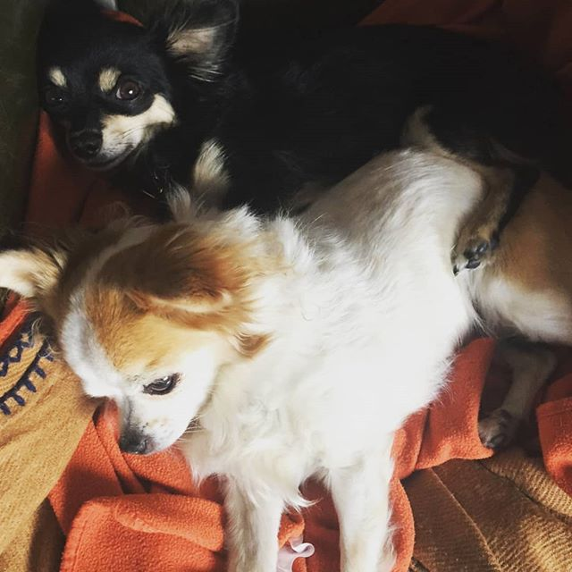
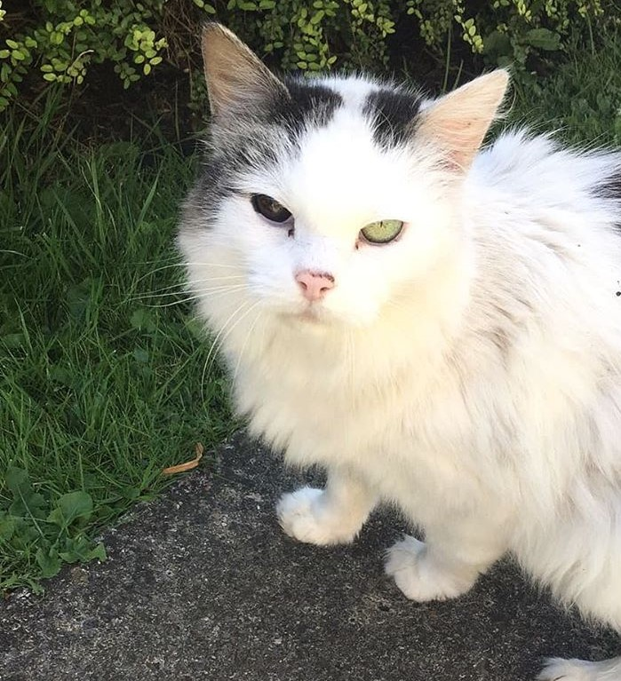
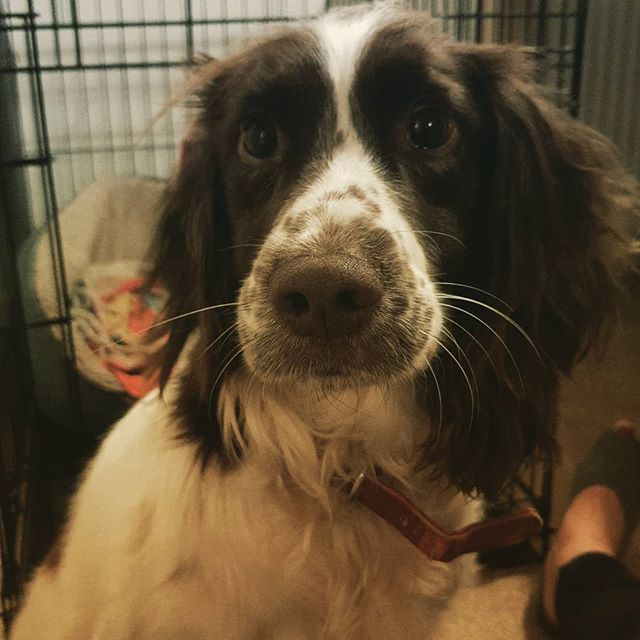
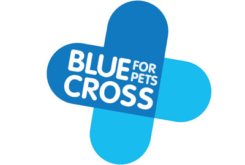

Our Animal Family
Meet the family



Get a glimpse of the action!
Thinking of adopting or volunteering?


The UK's leading charity. They specialise in animal rescue & furthering
the welfare cause for all animals.
Also known as the National Canine Defence League, is an animal welfare
charity and humane society in the United Kingdom which specialises in
the well-being of dogs.
One of the animal charities in the UK who have been helping sick,
injured and homeless pets since 1897.
BorrowMyDoggy is the best alternative to kennels, connecting dog owners
with trusted local dog sitters and walkers across the UK to share the care of a dog.